Drei Körbe, gestaffelt vom kleinen Gruß bis zum großen Festkorb — jeder benannt
nach einem der drei Lehrer der Temperamentenlehre. Alle enthalten biologische
Convivia-Delikatessen aus Sizilien und die gedruckte Temperament-Urkunde.
Für den persönlich zugeschnittenen Korb nutze den
Temperament-Kalkulator.
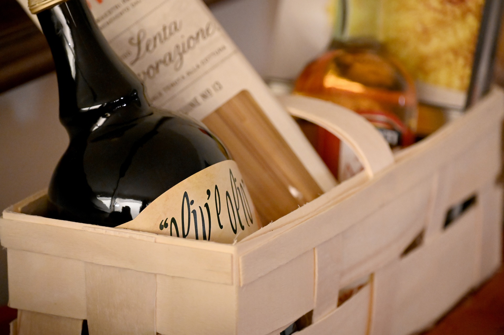
🌿
Korb Empedokles
494–434 v. Chr. · Akragas, Sizilien
Der Sizilianer erfand die vier Wurzelkräfte — Feuer, Wasser, Luft, Erde. Sieben Gaben, wie die sieben Sphären: der Einstiegskorb, die perfekte Aufmerksamkeit.
7 Produkte · inkl. Urkunde
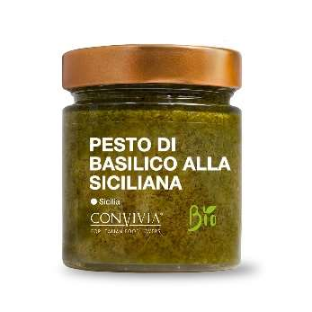
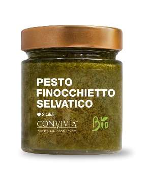
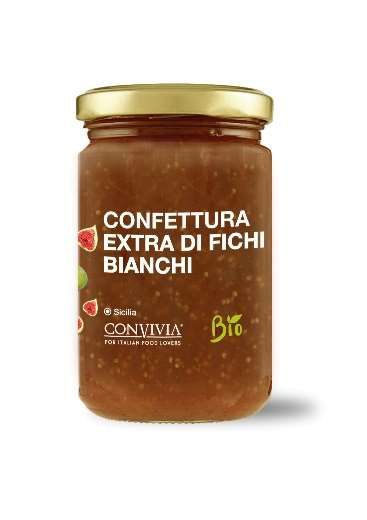
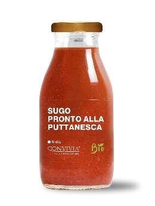
z. B. mit diesen Delikatessen
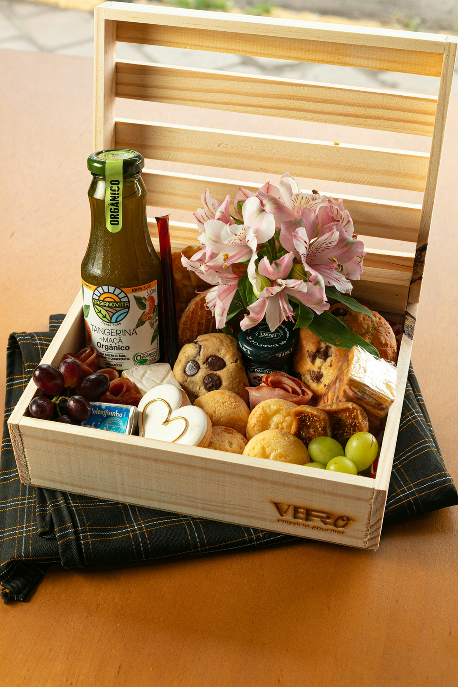
🎂
Korb Aristoteles
384–322 v. Chr. · Stagira & Athen
Der Systematiker gab jedem Element sein Qualitätenpaar — heiß, kalt, feucht, trocken. Neun Gaben, wie die neun Musen: der Geburtstagskorb mit erweiterter Auswahl.
9 Produkte · inkl. Urkunde
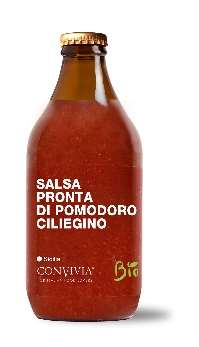
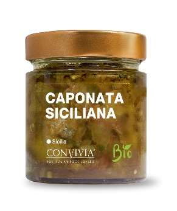
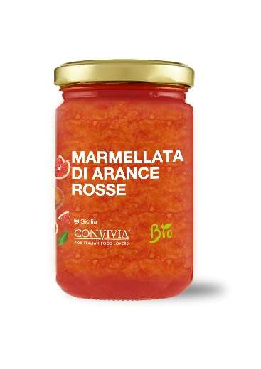
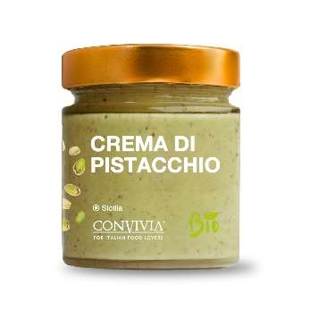
z. B. mit diesen Delikatessen
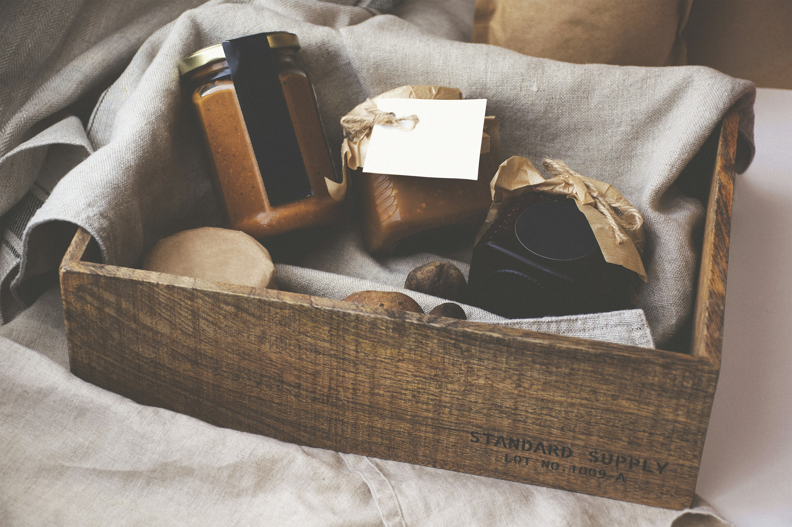
💍
Korb Galen
129 – ca. 216 n. Chr. · Pergamon & Rom
Der kaiserliche Leibarzt vollendete die Temperamentenlehre und schrieb das erste große Buch über die Kräfte der Speisen. Zwölf Gaben, wie die zwölf Zeichen: der große Festkorb für Hochzeit und Jubiläum.
12 Produkte · inkl. Urkunde
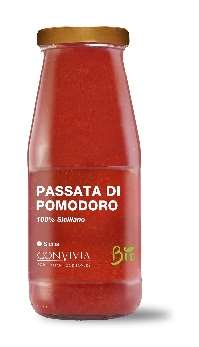
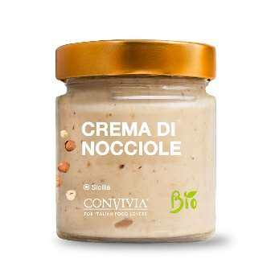
z. B. mit diesen Delikatessen
Die genaue Zusammenstellung jedes Korbes richtet sich nach dem Temperament der beschenkten
Person — die abgebildeten Delikatessen sind Beispiele. Den persönlich zugeschnittenen Korb
erstellt der Temperament-Kalkulator.